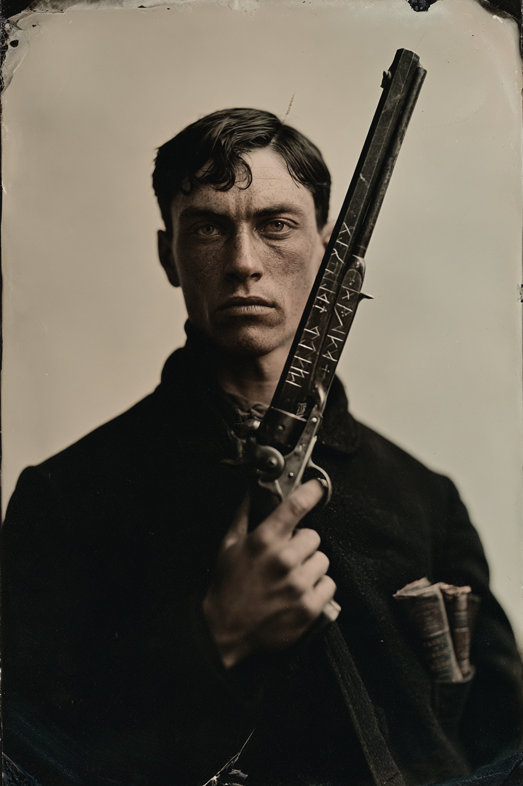

Archetyp: HEXSLINGER (Runenschütze)
„Mein Daddy predigte, das Wort schneide schärfer als jede Klinge. Er hat nie gesagt, welches Wort.“
Die Waffe — AMEN. Ein Colt Dragoon, .44, eine Pferdepistole für einen Krieg, den sein Vater nie führte — zweieinhalb Kilo Eisen mit einem Lauf, lang genug, um einen Mann totzuschlagen, falls das Pulver versagt. Ein Schmied in Wichita baute sie ’79 auf Patronen um und pfuschte dabei; der Umbauring ist blank, wo der Rest braun vor Alter ist. Das Wort AMEN ist in der klobigen Handschrift seines Vaters in den Rückenriemen gefeilt, ein Buchstabe pro Finger. Alles Übrige ist Zekes Arbeit: über beide Laufflächen laufen vier Reihen nordischer Stäbe, mit einer Nadelfeile über elf Nächte geschnitten, Holzschnitt für Holzschnitt abgemalt aus Die Abenteuer des Doc Holliday, Nr. 14. In den Nussbaumgriff ist Silberdraht in einem Muster gehämmert, das ein Bridgespieler als Blattdiagramm erkennen würde und sonst niemand als irgendetwas. Amen hat keine Persönlichkeit. Genau das ist das Problem. Zeke redet ununterbrochen mit ihr — vor Duellen, beim Kaffee, im Dunkeln — und sie hat nie geantwortet, und er wird das Gefühl nicht los, dass sie höflich zuhört und wartet. Die Runen sind tot. Sie haben noch nie geleuchtet. Noch nicht.
| Agility | d8 | 2 |
| Smarts | d6 | 1 |
| Spirit | d6 | 1 |
| Strength | d4 | 0 |
| Vigor | d6 | 1 |
| Skill | Attr. | Die | Pts. |
|---|---|---|---|
| Shooting | Agi | d8 | 3 |
| Spellcasting | Sma | d6 | 2 |
| Gambling | Sma | d6 | 2 |
| Intimidation | Spi | d6 | 2 |
| Notice | Sma | d6 | 1 |
| Fighting | Agi | d4 | 1 |
| Riding | Agi | d4 | 1 |
Hintergrund. Zekes Vater ritt die Ozark-Runde und predigte Höllenfeuer von einem Wagen herunter, und unter dem Kanzelbrett lag der Dragoon für die Teile des Countys, die das Wort nicht erreichte. Im Herbst 1881 erschoss ihn ein Mann namens Court Habersham auf den Stufen eines Hotels in Fayetteville wegen elf Dollar Schulden, und Zeke — neunzehn, ohne Waffe, ohne Nerven — sah von der anderen Straßenseite zu und rührte sich nicht. Er nahm den Dragoon von der Leiche seines Vaters, ging nach Westen und brachte sich das Kämpfen bei, wie ein Feigling alles lernt: indem er Fremde dafür bezahlte und die, die ihn betrogen, am Leben ließ. Die Groschenhefte fand er im Kaufladen eines Eisenbahnlagers in Colorado. Die meisten lesen sie wegen der Schießereien. Zeke las die Bilder — die Bridge-Diagramme am Rand, die „Druckfehler“ in den Kartenblättern — und etwas hinter seinen Augen setzte sich auf und begann zu geben.
Build. Geschicklichkeit W8, Verstand W6, Geist W6, Stärke W4, Konstitution W6 · Parade 4, Robustheit 5 Schießen W8, Zaubern W6, Glücksspiel W6, Einschüchtern W6, Bemerken W6, Kämpfen W4, Reiten W4 Talente: Arcane Background (Huckster), Duelist (Duellant), Quick Draw (Schnell Ziehen) Handicaps: Grim Servant o’ Death (Grimmiger Diener des Todes) — Major · Talisman — Minor: Amen ist der Talisman · Death Wish — Minor: er will mit der Waffe seines Vaters in der Hand sterben, sobald er weiß, für wen Fell-Handed gekommen ist Mächte (10 MP): Abwehren, Schutz, Eigenschaft erhöhen/senken — bewusst drei der vier Mächte, die eine Zauberpistole kanalisieren kann. Ausrüstung: Amen (ererbt), ein Colt Peacemaker als Arbeitswaffe, ein sehniger Falbe namens Habersham, weil Zeke den Namen gern laut ausspricht, ein bis auf die Fäden abgegriffenes Steamboat-Deck, und Die Abenteuer des Doc Holliday Nr. 9, 14 und 22, in Ölzeug neu gebunden.
Aufhänger. Amen führt Strichliste. Für jeden Mann, den Zeke mit ihr getötet hat, erscheint über Nacht eine Kerbe, sauber in die Ladeklappenfläche gefeilt — nicht von Zeke, der darauf gewartet und es nie erwischt hat. Jede Kerbe ist die Initiale des Toten. Es sind fünf. Es sind sechs Kerben. Die sechste ist ein P, und Zeke hat nie einen Mann mit P getötet. — Fell-Handed kam nicht für jemanden aus der Posse. Es kam für den einzigen Mann, den Zeke je zu erschießen sich weigerte: sich selbst, neunzehn, auf einer Hotelstufe in Fayetteville, nichts tuend. Die Schuld ist dieser Moment. Sie will in gleicher Münze beglichen werden.
Warum es Spaß macht. Du bist ein wandelnder Münzwurf mit einem Bibelvers drauf: der Grimmige Diener macht jeden Treffer härter und jeden Patzer zur Katastrophe für den, der neben dir steht — der Tisch hält die Luft an, wenn du ziehst. Und Duellregeln plus Duellant plus Schnell Ziehen machen dich zum unbestrittenen König der Mittagsstunde.
Regelgrundlage: Regelnotizen · Archetyp-Notizen